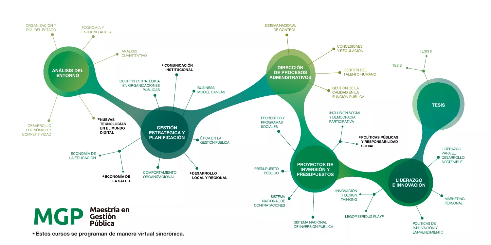
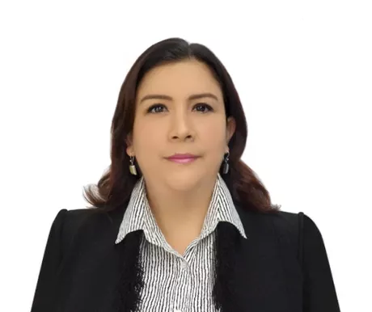
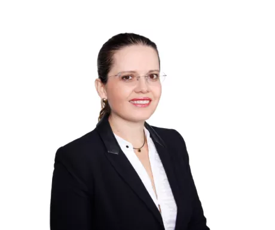

Elige el formato de tu interes
-
Fecha de Inicio
17 de octubre
-
Horario
Martes y jueves de 6:30 p.m. a 10:30 p.m.
-
Duración
22 meses aproximadamente
-
Inversión
25 cuotas de S/.900
-
Asesor
Fiorella Leonardi
-
Fecha de Inicio
17 de julio
-
Horario
Lunes y miércoles de 6:30 p.m. a 10:30 p.m.
-
Duración
22 meses
aproximadamente -
Inversión
25 cuotas de S/.740
-
Asesor
Fiorella Leonardi
-
Fecha de Inicio
19 de setiembre
-
Horario
Online
-
Duración
18 meses
aproximadamente -
Inversión
20 cuotas de S/.845
-
Asesor
Fiorella Leonardi
Siempre Conectados
Oscar Castro
Graduado de la Maestría en la EPGUTP, Padre, Auditor gubernamental,
Ama pasar tiempo en familia.
Generar Soluciones para las diversas Problemáticas Públicas
Nuestro país requiere profesionales que comprendan los desafíos y oportunidades que presenta la realidad peruana y estén preparados para implementar estrategias que generen soluciones para las diversas problemáticas públicas en el entorno local, regional y nacional.
En ese sentido, la Maestría en Gestión Pública Online se plantea el objetivo de brindar herramientas claves a sus participantes, desde diferentes perspectivas para formar líderes capaces de abordar los desafíos que enfrentamos como nación, con respecto a la elaboración y gestión de políticas públicas.
Este programa también contempla todos los aspectos relacionados al diseño e implementación de proyectos orientados a promover el bienestar de la población a través del desarrollo social, educativo y económico. Para ello se considera la gestión estratégica de los recursos, administración del presupuesto, gestión de la calidad y sistemas de control.
De esta forma, nuestros egresados tendrán las competencias necesarias para generar iniciativas eficientes que contribuyan a solucionar los problemas de desarrollo económico, educativo y social en nuestro país.
Beneficios
-
Nuestro Estilo de Pensamiento + Aprendizaje
Nuestra metodología de enseñanza integra las herramientas de gestión, con la evolución del pensamiento y la mentalidad orientada al desarrollo del país. Nuestra maestría online transforma la visión del participante y lo impulsa a desafiar sus límites y plantear cambios para el corto, mediano y largo plazo.
-
Asignaturas que Trascienden la Gestión Pública tradicional
Las asignaturas se complementan en forma efectiva mediante el método de casos, debates, trabajos en equipo y presentaciones. De esta forma, el participante se desarrolla para la toma estratégica de decisiones con problemáticas reales de la Gestión Pública.
-
Liderazgo Transformador
Este programa fomenta el desarrollo de habilidades y aptitudes directivas, estratégicas e interpersonales, convirtiendo a nuestros estudiantes en líderes.
-
Docentes con Formación Académica sólida y Trayectoria en Instituciones Públicas para crear una Verdadera Experiencia de Aprendizaje
Contamos con profesionales expertos, quienes cuentan con estudios superiores en universidades prestigiosas del Perú y el mundo. Además, tienen una trayectoria forjada en instituciones del Estado
-
Medición de Competencias
En la EPG nos aseguramos de que nuestros estudiantes logren las competencias generales y específicas ofrecidas en cada programa de maestría. Por ello, todos los estudiantes participan en una medición de competencias, en tres oportunidades, durante sus estudios. Cada estudiante recibe un informe personalizado con sus resultados, los que permiten identificar oportunidades de mejora. Esta información nos permite seguir mejorando nuestros procesos formativos, ya que estamos comprometidos con la mejora continua.
Malla Curricular

Clik para agrandar la imagen
Docentes
-
Alberto Barrenechea
Magister en Economía de la Salud y del Medicamento en la UPF (España). Economista,UP. Investigador de Organismos Internacionales: OPS, OIT, ONUSIDA, Banco Mundial y BID. Consultor en MINSA, MEF, MIDIS, MINTRA, EsSalud. Gerente General de Consultora DECISIÓN
-
Alicia Peralta Mendoza
Magíster en Gestión Pública, UTP. Magíster en Desarrollo Ambiental, PUCP. Economista Colegiada, UNALM. Consultora BID responsable de Unidad de Inversiones en PMESUT - Ministerio de Educación, Consultora en la DGPRVU en el MVCS. Encargada de la Unidad de Planeamiento en IPEN, Consultora BM en Salvaguardas Ambientales y Sociales en PROMOTASS/OTASS-MVCS, responsable de la Unidad Formuladora y de Cooperación Internacional en OSITRAN. Especialista Senior de Cooperación y Asuntos Internacionales en el MVCS, evaluadora de Proyectos de inversión Pública y Público-Privada (APP) en MINEDU y Consultora BID en PROSAAMER-MIDAGRI.
-
Anabel Reaño
Máster en Administración de Negocios y TI (MBA-IT), U Lima. Ingeniera Industrial, UCSMA graduada con honores. Con capacitación profesional en Silicon Valley California - EEUU. Ejecutiva de Evaluación de Proyectos en Proinnóvate del Ministerio de la Producción. Se desempeñó como Gerente General en SENCICO.
-
Audrey Mendoza
MBA, UPC. MBA Internacional, UPC (España). Sistema 5’S, AOTS. Seminario en Administración de las 5’S, HIDA (Japón). Experiencia en Gestión por Procesos, Mejora Continua, Dimensionamiento en las Entidades Públicas, SGC y Administración en el Sector Público y Privado.
-
Carlos Mendiburu
Magíster en Matemáticas Aplicadas, PUCP. Economista. Especialista en Métodos Cuantitativos y Métodos de Proyección. Es Jefe del Departamento de Políticas Estructurales en el Banco Central de Reserva del Perú, donde también fue Jefe del Departamento de Programación Financiera.
-
Carmen Mejía
MBA, Centrum PUCP. Beca EPCM (Japón). Egresado Doctorado, UNFV. Ingeniero Industrial, UNI. Ingeniero Químico, UNMSM. Consultor y Asesor Empresarial en Estrategia y Operaciones. Ha sido gerente de operaciones por mas de 15 años en empresas como Metalúrgica Peruana SA, Grupo Klaus Brass entre otros.
-
David Crovetto
Maestro en Administración de Empresas, UTP. Master en Dirección de Tecnología de Información, Business Excellence School – CTO (España). Ingeniero de Sistemas, UPC. Es Coordinador Técnico SIG Proyecto TCB-OACI, ONU - MTC. Cuenta con más de 20 años de experiencia en gestión pública y privada, Consultor Proyecto BID en planificación, presupuesto y proyectos e innovación TIC. Ha sido Jefe de TIC y Administrador en SENASA.
-
Eduardo Ferreyra
MBA, EPGUTP. Programa Ejecutivo en Marketing Centrum Católica, Coach Certificado Profesional de Global Impactum School Of Coaching, Especialización en Inteligencia Emocional y Neurociencias Aplicado a la Docencia Universitaria de Universidad Abierta Interamericana de Argentina. Ha sido Gerente de Cuentas Clave en Bitel Perú, Jefe e Postventa y Desarrollo Comercial en Fiberlux.
-
Francisco Coriñaupa

Doctor en Educación, Estudios de doctor en Ciencias Sociales, UNMSM. Magister en Política Social, UNMSM. Especialista en Gestión Educativa. Psicoanalista. Articulista en temas de educación, realidad social y psicoanálisis.
-
Geofret Montalván
MBA, Centrum Católica. Innovation and Business Strategic Northwestern, Kellog School of Management. Diplomado en Gestión Integral de la Innovación, UP. Strategic Decision and Risk Management Certificate Program, Stanford University. Exponential Foundation Series, Singularity University. Digital Transformation Program, Harvard Kennedy School. Ha sido Gerente de Planificación y Estudios Económicos en el Servicio de Administración Tributaria de Lima.
-
Jesús Andrés Vega
Magíster en Derecho Administrativo Económico, Instituto Universitario de Investigación Ortega y Gasset (adscrito a la Universidad Complutense de Madrid).Máster en Auditoría, Seguridad, Gobierno y Derecho de las TIC, Universidad Autónoma de Madrid. Es Abogado Senior en el Estudio Benites, Vargas & Ugaz Abogados en el área de Derecho Público. Es Gerente en Recursos Humanos en SERVIR - Cuerpo de Gerentes Públicos de la Autoridad Nacional del Servicio Civil. Ha sido abogado en el Tribunal del Servicio Civil de SERVIR, como asesor de la Secretaría General del Ministerio de la Mujer.
-
Jorge Ayulo
MBA, Centrum PUCP. Periodista, PUCP. Actual asesor en el Congreso de la República. Ha sido Gerente Central de Imagen del Ministerio Público. Cuenta con experiencia como productor en los principales medios de comunicación. Ha sido conductor del programa radial “Tu Negocio, Tu Marca”.
-
Juan Pablo de la Guerra
MBA, Centrum PUCP. Periodista, PUCP. Actual asesor en el Congreso de la República. Ha sido Gerente Central de Imagen del Ministerio Público. Cuenta con experiencia como productor en los principales medios de comunicación. Ha sido conductor del programa radial “Tu Negocio, Tu Marca”.
-
Julio Granados

Magister en Educación Superior con mención en Acreditación, U. Occidente (Nicaragua) y MBA, UTP. Auditor en Sistemas de Gestión de Calidad - ISO 9001. Es Jefe de Proyectos Educativos, EPGUTP. Ha sido Supervisor de Carreras Profesionales en IFB-ASBANC y Responsable de Acreditación, Evaluación docente en diversas Instituciones Educativas.
-
Luis Del Carpio

Magíster en Administración y Magíster en Finanzas, UP. Más de 15 años de experiencia en Proyectos de Inversión Público-Privada. Es Director Proyecto y Sub Director de Servicios a Proyectos en Proinversión. Director de Proyecto Anillo Vial Periférico de Proinversión. Programa de capacitación en Gestión Urbana para un Desarrollo Sostenible Agencia de Cooperación Internacional del Japón - JICA, entre otros.
-
Magali Meza
Magister en Desarrollo Organizacional, UP. Programa de Dirección General, PAD. Consultora BID en Gestión de RRHH y Modernización del Estado. Gerente de Desarrollo de Capacidades y Rendimiento en la Autoridad Nacional del Servicio Civil - SERVIR. Ha sido Directora de RRHH del Ministerio del Interior, Directora General de RRHH del Ministerio de Transportes y Comunicaciones, Directora de Recursos Humanos en Migraciones, Directora General de Recursos Humanos en PROVIAS Nacional, Miembro del Consejo Directivo de SUNAFIL, Directora General de RRHH en MINDEF, Gerente del Sistema de RRHH en SERVIR.
-
Michael Lázaro
Magíster en Gestión de la Innovación, U. Cayetano Heredia. Jefe de Gestión de Operación de Cadenas en Claro Perú. Mentor en Estrategia e Innovación de Negocios para Emprendedores y Empresarios. Ha sido Product Owner de Estrategia de Canales Digitales en Interbank.
-
Omar Begazo
MBA, ESAN. Economista. Analista económico en la Dirección Nacional de Cuentas Nacionales del INEI. Ha sido Subgerente de Control de la Recaudación, en la Gerencia Central de Aseguramiento y Subgerente de Ingresos y Transferencias en la Gerencia Central de Gestión Financiera de EsSalud.
-
Renzo Mejía
MBA, ESAN. Experiencia en Desarrollo de Negocios, Desarrollo de Productos, Plan de Marketing, Desarrollo de Nuevos Mercados, Gestión Comercial, Trade Marketing, Visual Merchandising, Campañas Publicitarias, RSE y Comunicación Corporativa. Se ha desempeñado como Gerente Marketing en Grupo Rotoplas y como Brand Manager en Corporación PECSA.
-
Ricardo Walter
Maestro en Gestión y Control Gubernamental, UIGV. Experiencia de más de 23 años en Auditoría Gubernamental. Es Auditor y Jefe del Órgano de Control Institucional en la Contraloría General de la República. Ha sido Auditor Encargado en la comisión de auditoria "Examen Especial", UNMSM, UNAP y UNS.
-
Samuel Rivera
Magíster en Administración Estratégica de Empresas, PUCP. Máster en Liderazgo y Gestión Pública, U. Internacional de la Rioja (España). Es Asesor Legal en Concesiones y Asociaciones Público Privadas del Departamento de Megaproyectos de la Contraloría General de la República. Ha sido Asesor en Asociaciones Público Privadas en la Oficina de Gestión de Inversiones del Ministerio de Justicia.
-
William Aranda
Doctorado en Ciencias Administrativas, UNMSM. Es Consultor de la Organización de Aviación Civil Internacional (OACI). Ha sido Gerente del Centro de Instrucción de Aviación Civil (CIAC) de CORPAC S.A. y Presidente de la Reunión de Directores de CIACs de la Región Sudamericana de la OACI.
Admisión
- Grado Académico Bachiller (Registrado en SUNEDU)
- Experiencia laboral relevante, mínimo 2 años.
- Evaluación de las aptitudes de los postulantes mediante:
- Entrevista telefónica.
- Evaluación de conocimientos.
- Carta de presentación.